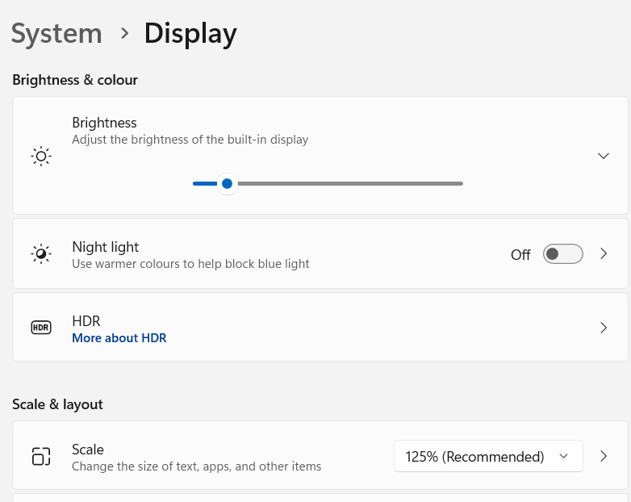

The goal of screenshot is to take a screenshot easily and locate image position on a display with R.
Installation
You can install the development version from GitHub with:
# install.packages("remotes")
remotes::install_github("matutosi/screenshot")
install.packages("screenshot") # You can also install from CRAN:On Windows, need to install screenshot.exe by install_screenshot(). This exe file is compiled from codes shown below.
https://superuser.com/questions/75614/take-a-screen-shot-from-command-line-in-windows#answer-1751844
library(screenshot)
# required on win
install_screenshot()
# if you want to install another directory
# bin_dir <- "SET_YOUR DIRECTORY"
# install_screenshot(bin_dir)On Mac screencapture is usually available.
On Linux GNOME desktop use gnome-screenshot. If not installed, run sudo apt install gnome-screenshot.
Example
You can use screenshot() to take a screenshot easily.
library(screenshot)
sc <- screenshot()
sc_image <- imager::load.image(sc)
plot(sc_image)To locate image from a screenshot, use locate_image(). In this case, bottom left corner of screenshot image was cut off as needle image.
sc <- screenshot()
sc_image <- imager::load.image(sc)
w <- 100
h <- 80
pos_x <- 1
pos_y <- imager::height(sc_image) - h
needle <- hay2needle(sc_image, pos_x, pos_y, w, h)
(locate_image(needle)) # center location
pos <- locate_image(needle, center = FALSE)
found <- hay2needle(sc_image, pos[1], pos[2], w, h)
layout(c(1:3))
plot(sc_image)
plot(needle)
plot(found)On Windows, clipboad image can be saved by save_clipboard_image().
path_img <- "path_of_png_file"
save_clipboard_image(path_img)
shell.exec(path_img)Caution (=0.9.0)
- Automatically adjusted in 0.9.1 and latter.
When changing display DPI scaling, need to adjust position.
# when using 125%
pos <- locate_image(IMAGE_TO_CLICK) / 1.25
KeyboardSimulator::mouse.move(pos[1], pos[2])
KeyboardSimulator::mouse.click()You can see display scale in setting app as shown below.

Citation
Toshikazu Matsumura (2023) screenshot. Screenshot and locate image Easily. https://github.com/matutosi/screenshot/.